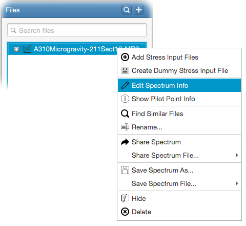

You can edit basic spectrum attributes and assign mission parameters by right-clicking on a spectrum and selecting
- Edit Spectrum Info
from the popup menu as shown in the following figure.

This opens the edit spectrum info panel. In the panel, basic spectrum attributes such as A/C program,
A/C section, fatigue mission and etc. can be edited.